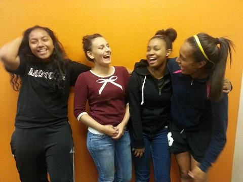

Technovation Challenge is the world’s largest and longest-running tech competition for girls. High school girls work with MIT App Inventor to design their own mobile apps in response to the question, “What is a problem in your community for which you could create an app as a solution?” This year 114 teams of girls from around the world competed in the Challenge including a team called the EPA Chica Squad from Bayshore Christian Ministries in East Palo Alto, CA. Their app to clean up trash and graffiti in their community garnered interest from the local police chief and an article in the Palo Alto Weekly, reprinted here.
East Palo Alto girls create app to clean up graffiti, trash
EPA Chica Squad places high in a global mobile-app competition
by Elena Kadvany
Palo Alto Weekly Staff

The EPA Chica Squad members, from left, Margarita Tenisi, Rosie Valencia, Ashley Davis and Vanessa Tostado created an app called "Tag It!" that not only records the location of graffiti but helps create an event to get it cleaned up. Their app placed in the top 20 worldwide in the Technovation competition.
Vanessa Tostado, a sophomore at Eastside College Prep in East Palo Alto, remembers watching a video in computer science class this year that stuck with her.
"We actually saw a video about how there aren't many girls in engineering. So it's like, 'Ugh, we should do it. It's really important.'"
The "it" she referred to is Technovation Challenge, a global competition that uses an online curriculum to guide teams of middle and high school girls through the process of developing mobile-phone applications.
Self-dubbed the "EPA Chica Squad," three Eastside Prep sophomores -- Vanessa, Ashley Davis and Margarita Tenisi -- and one Sequoia High School freshman, Rosie Valencia, competed in Technovation this year.
They created an Android app called "Tag It!" that allows users to take a picture of graffiti, vandalism or trash in their neighborhood, tag its location and create an event to get it cleaned up.
The girls competed in the third and largest Technovation Challenge competition against 114 applicants from Mountain View High School and Castilleja School in Palo Alto as well as China, Yemen, Jordan, Brazil, Indonesia, India, Nigeria, Ukraine and the United Kingdom. They placed in the top 20 worldwide and in the top five out of 36 entries in the San Francisco region.
The four girls created their app in 12 weeks, working on two borrowed laptops for just four hours each week at Bayshore Christian Ministries in East Palo Alto. They were guided by two tech professionals: Selina Martinez, a Bayshore volunteer who used to work at a Facebook apps startup, and Sarah Clatterbuck, a LinkedIn web developer.
At a reception on Monday, Vanessa recalled the day they began brainstorming, sitting upstairs in a room at Bayshore, writing down ideas that corresponded to three questions: What do you want to do? What is the purpose? What are some ideas?
"We started with issues in the community and then went to apps that help those issues," said Rosie, a dancer and swimmer whose introduction to tech this year has made her want to study computer science in college.
They threw around a few ideas -- a fire-alarm app, a text-and-call police app -- but all credit Rosie with coming up with the graffiti-and-trash cleanup idea.
To formulate a business plan, the girls conducted research, including their own survey on whether East Palo Altans are unhappy with the way their neighborhoods look.
Forty-one percent of residents said they were dissatisfied.
The girls then came up with a "total likely market" for their app -- 54 million users -- by multiplying the number of U.S. smartphone owners with the percentage who live in an urban area, and then multiplying that with the percent of people unhappy with how their neighborhoods look.
"I was just really amazed at their ideas, their input, the fact that they were able to create a functional prototype in 12 weeks with just a few hours every week," Martinez said. "Sarah and I were talking about how long it takes -- it takes about that amount of time, but working full time."
Clatterbuck, who is part of a LinkedIn "Women In Tech" group that works to increase women's presence in the tech world, said that the most challenging part of the 12 weeks was everyone simply finding those four hours every week to meet.
But the best part?
"Seeing that with relatively little time, you can basically crank out a pretty interesting idea," she said. "These guys are pretty inspiring because they're not constrained by all the preconceptions about what you can build and what you can't build like we are in the industry."
Not to mention, the girls developed the app on about $2,000, funding that was granted by Facebook's local community fund that launched in December.
Bayshore Executive Director Rolando Zeledon, who has a master's degree in engineering from Stanford University, applied for the grant. The funds covered a laptop, Android phone, meal and facility costs and an incentive in the form of a lunch-and-shopping afternoon with the girls and their mentors in San Francisco. LinkedIn also co-sponsored the team.
Zeledon said he also hopes to use the remaining grant funds -- the total was $5,000 -- to offer either a programming or app-development course (and an instructor to run it) this summer.
On Monday night, the girls recalled how their successful team got off the ground. Two Chica Squad members, Margarita and Ashley, both of whom are soft-spoken and athletic, competed in Technovation Challenge last year with Eastside Prep. The pair didn't join this year's team until the fourth or fifth week, after two other girls dropped out, leaving Rosie and Vanessa scrambling for the required four team members.
Vanessa shared a computer science class with Ashley and bugged her "daily" until she relented.
"Then both of us kind of bullied Margarita into doing it," said Vanessa, whose enthusiasm and smile are quickly convincing.
Zeledon said that the majority of the teams competing in Technovation Challenge were school-based, meaning they had more built-in resources and support than the Chica Squad.
But the girls pushed on regardless, and all of them are dedicated to working on the app this summer to either get more funding to publish the app or to launch it themselves. They also have numerous "future features" that they weren't able to execute in the 12 weeks, such as a map feature that shows all the tagged locations and cleanup events as well as access to share the app's information on Facebook and Twitter.
Zeledon asked the girls Monday why the community needs their app.
"If a community looks good, it reflects positivity," Vanessa said. "It's not only how it looks, but it might inspire positive change in the community."
Vanessa said that working on the app also pushed her to take AP computer science next year.
"It opened my eyes to a new branch that I might like to look into in college."
Zeledon, too, has high hopes for the girls and the Technovation Challenge program, hoping to create a similar concept for young men next year.
"Our vision is to be able to have an EPA design team of high schoolers to create apps for the city, for organizations," he said. "I want to make sure the girls lead that process. I want them to own it."
"Could you imagine an EPA app, wouldn't that be cool?" he asked the girls at the reception.
They all nodded in a unanimous "Yes!"
Watch a video of the EPA Chica Squad.
This article was originally written for the Palo Alto Weekly and is reprinted with permission from their website, www.PaloAltoOnline.com.